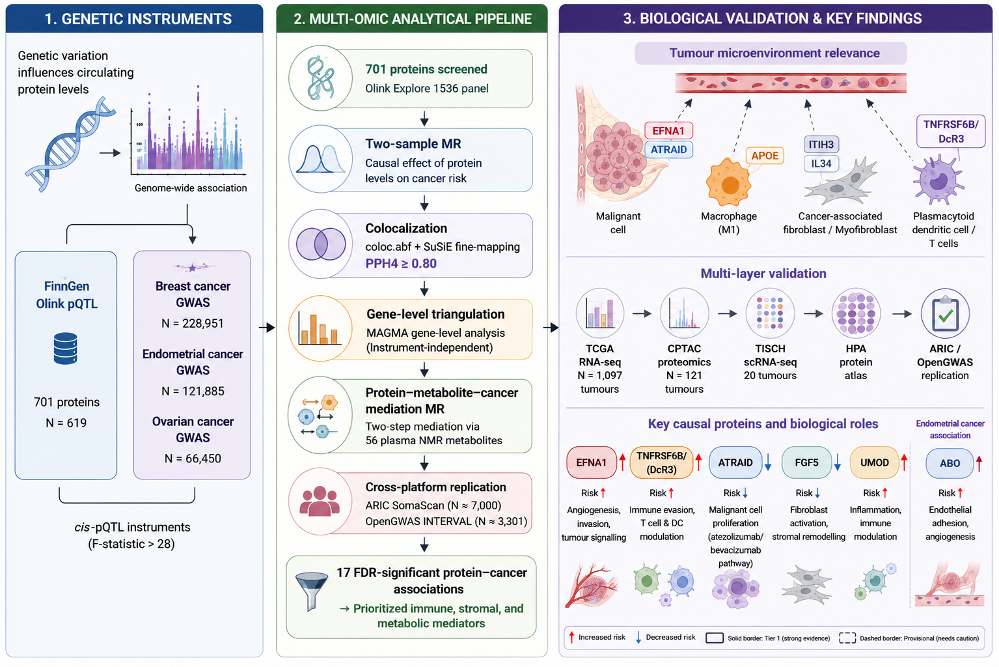
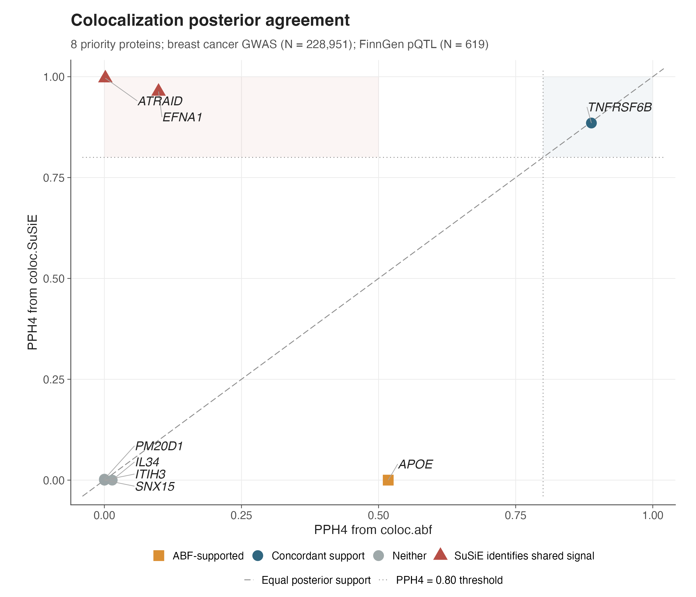
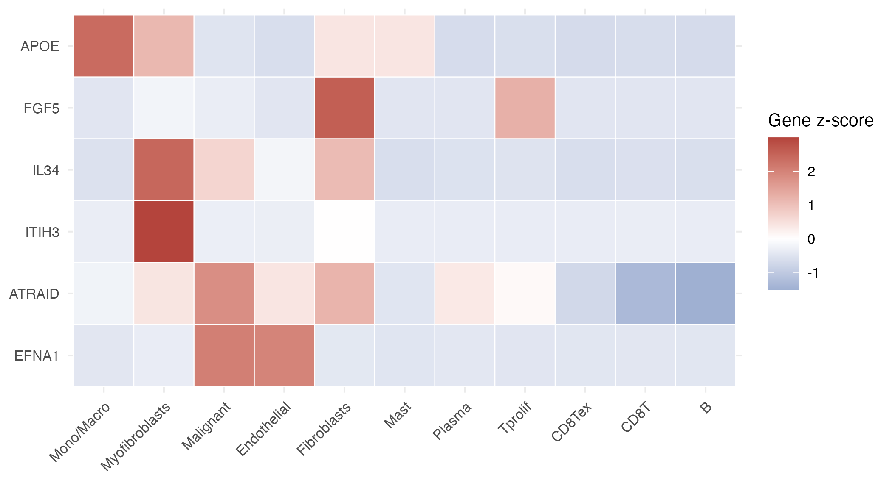
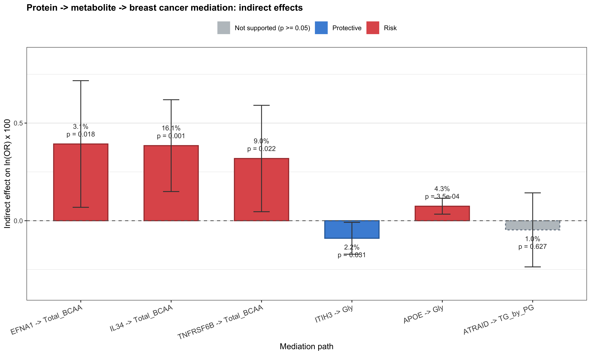
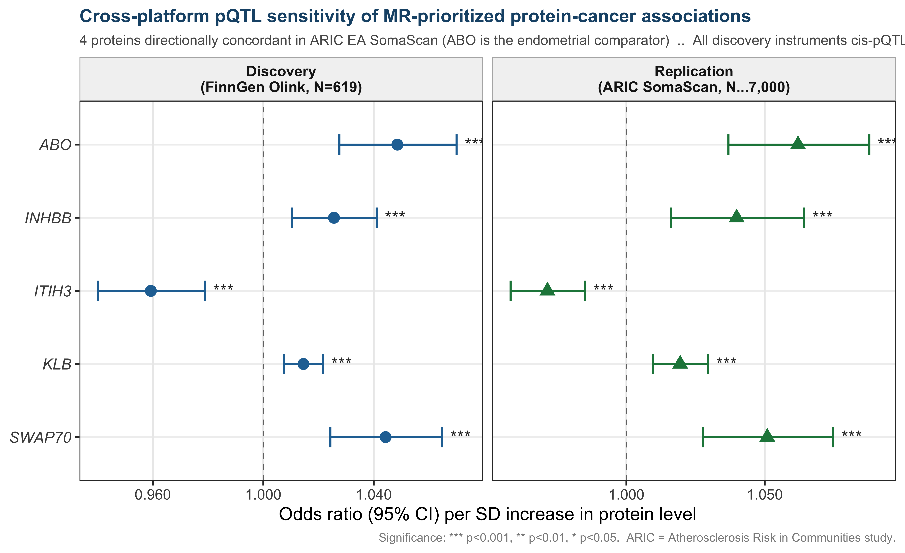
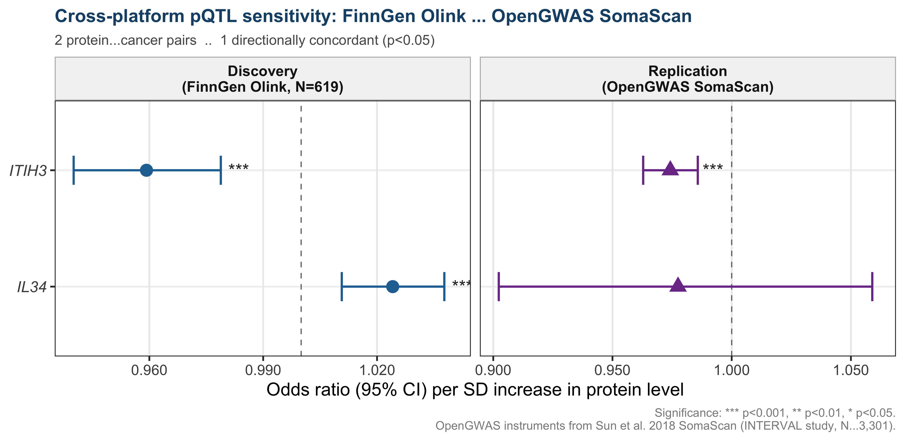

This interactive companion provides access to the data summary, figures, and evidence tables underlying our multi-omic Mendelian randomisation (MR) study of circulating proteins and breast cancer risk.
Study: Using cis-protein quantitative trait loci (cis-pQTLs) from the FinnGen Olink proteomics platform (N = 619) as genetic instruments, we performed a proteome-wide two-sample MR screen of 701 circulating proteins against breast cancer (BCAC GWAS, up to 247,173 participants). Seventeen protein–cancer associations survived Benjamini–Hochberg false discovery rate correction (FDR < 0.05). Candidate proteins were subsequently triangulated through colocalization (coloc.abf and coloc.SuSiE), gene-level GWAS enrichment (MAGMA), ER-subtype stratification, metabolic mediation analysis, immune tumour microenvironment profiling, and replication in an independent proteomics platform (ARIC SomaScan).
Proteins were classified into four evidence tiers based on the breadth of corroborating evidence:
| Tier | Criteria | Proteins |
|---|---|---|
| T1 — Highest confidence | MR + dual colocalization (ABF and SuSiE PPH4 ≥ 0.80) | EFNA1, TNFRSF6B, ATRAID, FGF5, ABO |
| T2a — High confidence | MR + ABF-only colocalization (PPH4 ≥ 0.80) | SNX15, PM20D1, UMOD |
| T2b — Moderate confidence | MR + partial colocalization support | APOE, TSPAN8 |
| T2c — MR-supported | MR signal only; colocalization not significant | 7 proteins |
- MR Screen — Proteome-wide volcano plot of all 701 × 3 protein–cancer tests.
- Forest Plot — Effect estimates (odds ratio, 95% CI) for all 17 FDR-significant associations.
- Colocalization — PPH4 posterior probabilities from coloc.abf and coloc.SuSiE.
- ER Subtypes — ER-positive vs ER-negative subtype stratification.
- MAGMA — Gene-level GWAS enrichment confirming overlap.
- Replication — Independent validation using ARIC and OpenGWAS.
- Immune — Tumour immune microenvironment correlations.
- Evidence — Integrated multi-layer evidence table.
- Druggability — Open Targets druggability assessment.
- Mediation — Metabolic mediation analysis identifying indirect pathways.



Major Lineage

Minor Lineage



